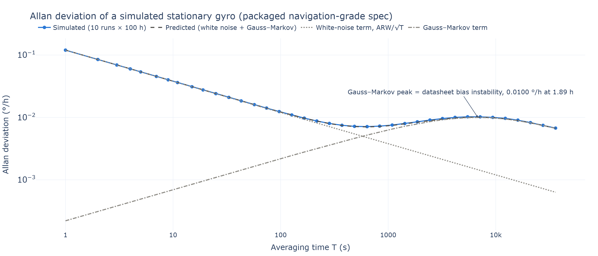

IMU error model¶
Gyros and accelerometers are never perfect. Each output carries a bias that differs every time the IMU is switched on and wanders slowly during a run, gain and alignment errors that grow with the motion, and white noise. The navigator integrates all of these, which is why an INS drifts. The IMU spec you choose in the GUI sets the size of each error, in the units of a sensor datasheet. ins_sim models them with the sensor error model of Groves1, one realization per Monte Carlo trial.
Key results
- Each sensor output is the true value, scaled and cross-coupled by a matrix \(\Ithree + \mathbf{M}\), plus a static bias, a slowly varying dynamic bias and white noise.
- Bias instability is entered as the datasheet value \(B\). The dynamic bias is a Gauss–Markov process with spread \(B/0.617\), so that its Allan deviation peaks at exactly \(B\).
- The white noise per sample is the random-walk density divided by \(\sqrt{\tau_i}\), so results do not depend on the IMU's sample rate.
- Every trial draws its own errors, from separate random streams for the gyros, the accelerometers and the initial alignment.
Physical picture¶
flowchart LR
T["True rate ω<sub>ib</sub><sup>b</sup><br/>or specific force f<sub>ib</sub><sup>b</sup>"] --> M["× (I + M)<br/>scale factor and<br/>misalignment"]
M --> S["+ static bias<br/>b<sub>s</sub>"]
S --> D["+ dynamic bias<br/>b<sub>d</sub>(t)"]
D --> W["+ white noise<br/>w"]
W --> O["Sensor output"]The error terms behave very differently:
- Scale factor and misalignment. A sensor's gain is slightly wrong, by parts per million, and its axes are not exactly orthogonal or exactly along the body axes, by microradians. These errors are proportional to what the sensor measures, so they are present even at rest, where the accelerometers measure gravity and the gyros the Earth's rotation, and largest in turns and accelerations.
- Static bias. Every time the IMU is switched on, each bias settles at a slightly different value, then stays there for the run. Datasheets call its spread the turn-on bias repeatability.
- Dynamic bias. During the run the bias wanders slowly, over minutes to hours. Datasheets quantify this as the bias instability.
- White noise. Every sample is noisy. Integrated by the navigator, gyro noise becomes a random walk in angle (angle random walk, ARW) and accelerometer noise a random walk in velocity (VRW).
The packaged spec is typical of a ring-laser-gyro aircraft INS:
| Error | Gyro | Accelerometer | YAML keys |
|---|---|---|---|
| Random walk | 0.002 °/√h | 0.005 m/s/√h | arw_deg_per_rt_hr, vrw_m_per_s_per_rt_hr |
| Bias instability (datasheet) | 0.01 °/h | 5 µg | bias_instab_deg_per_hr, bias_instab_ug |
| Bias correlation time | 1 h | 1 h | bias_tau_s |
| Turn-on bias repeatability | 0.01 °/h | 25 µg | repeatability_deg_per_hr, repeatability_ug |
| Scale factor | 5 ppm | 100 ppm | scale_factor_ppm |
| Misalignment | 50 µrad | 50 µrad | misalignment_urad |
and its initial alignment leaves a tilt of 0.0015° and a heading error of
0.04° (1σ), set in its alignment: block.
Continuous-time model¶
The measurement equations¶
where:
- \(\fvec[\tilde]{ib}{b}\) and \(\wvec[\tilde]{ib}{b}\) are the accelerometer and gyro outputs [m/s², rad/s], and \(\fvec{ib}{b}\), \(\wvec{ib}{b}\) the true specific force and angular rate (see Truth trajectory & ideal IMU);
- \(\mathbf{b}_a = \mathbf{b}_{as} + \mathbf{b}_{ad}\) and \(\mathbf{b}_g = \mathbf{b}_{gs} + \mathbf{b}_{gd}\) are the biases, each a static part (subscript s) and a dynamic part (subscript d) [m/s², rad/s];
- \(\mathbf{M}_a\) and \(\mathbf{M}_g\) are the scale-factor and misalignment matrices [dimensionless];
- \(\mathbf{w}_a\) and \(\mathbf{w}_g\) are white noise [m/s², rad/s].
Scale factor and misalignment¶
where the scale-factor errors \(s\) and the six misalignments \(m\) are
independent, zero-mean and normally distributed, with the spreads of the
spec's scale_factor_ppm and misalignment_urad [dimensionless, rad].
Dynamic bias: a first-order Gauss–Markov process¶
Each axis's dynamic bias \(b_d\) relaxes towards zero while being kicked by white noise:
where \(\tau_c\) is the correlation time (bias_tau_s) [s] and \(\sigma\) the
steady-state spread of the bias [rad/s or m/s²]. Its correlation with itself
decays as \(e^{-|\Delta t|/\tau_c}\): over times much shorter than
\(\tau_c\) it looks like a constant bias, over much longer times like noise.
A datasheet does not quote \(\sigma\). It quotes the bias instability \(B\), the floor of the sensor's Allan deviation, the standard measure of how much a sensor's average output varies between successive averaging windows of length \(T\). For white noise plus a Gauss–Markov bias:
where \(\sigma_A\) is the Allan deviation [rad/s or m/s²], \(T\) the averaging time [s] and \(N\) the white-noise density defined below. The Gauss–Markov term peaks at \(0.6174\,\sigma\) when \(T = 1.89\,\tau_c\). ins_sim therefore sets
so the simulated Allan deviation peaks at exactly the datasheet value. See Validation for how to choose \(\tau_c\) from a datasheet's Allan plot.
White noise¶
White noise of density \(N\) integrates into a random walk whose spread grows with the square root of time:
where \(N\) is the ARW (gyro) [rad/√s] or VRW (accelerometer) [m/s/√s], and \(\sigma_\theta\) the spread of the integrated angle [rad] or velocity [m/s].
Initial alignment¶
Before navigating, an INS aligns itself at rest. It levels by finding which way gravity points, which leaves a tilt error of about the accelerometer bias over \(g\). It finds North by gyrocompassing, measuring the direction of the Earth's rotation, which leaves a heading error of about the East-pointing gyro's bias over \(\omega_{ie}\cos L_b\). Each trial draws this residual alignment error as the initial attitude error:
For the packaged spec, 25 µg over \(g\) is 0.0014°, and 0.01 °/h over the Earth's horizontal rotation at 18.5° N is 0.04°: the spec's tilt and heading values.
As implemented¶
1. Datasheet units to SI. The YAML spec is converted as it is loaded:
| Datasheet unit | Factor to SI | SI unit |
|---|---|---|
| °/√h | \(\pi/180/60\) | rad/√s |
| °/h | \(\pi/180/3600\) | rad/s |
| µg | \(9.80665 \times 10^{-6}\) | m/s² |
| m/s/√h | \(1/60\) | m/s/√s |
| ppm, µrad | \(10^{-6}\) | –, rad |
DEG_HR = np.pi / 180 / 3600
return IMUSpec(
gyro_arw = g["arw_deg_per_rt_hr"] * np.pi / 180 / 60,
gyro_bias_instability = g["bias_instab_deg_per_hr"] * DEG_HR,
gyro_bias_tau = g["bias_tau_s"],
gyro_br_std = g["repeatability_deg_per_hr"] * DEG_HR,
gyro_sf_std = g.get("scale_factor_ppm", 0.0) * 1e-6,
gyro_ma_std = g.get("misalignment_urad", 0.0) * 1e-6,
accel_vrw = a["vrw_m_per_s_per_rt_hr"] / 60,
accel_bias_instability = a["bias_instab_ug"] * 1e-6 * 9.80665,
accel_bias_tau = a["bias_tau_s"],
accel_br_std = a["repeatability_ug"] * 1e-6 * 9.80665,
accel_sf_std = a.get("scale_factor_ppm", 0.0) * 1e-6,
accel_ma_std = a.get("misalignment_urad", 0.0) * 1e-6,
align_tilt_std = al.get("tilt_std_deg", 0.0) * np.pi / 180,
align_heading_std = al.get("heading_std_deg", 0.0) * np.pi / 180,
baro = None if baro is None else baro_spec_from_yaml(baro),
)
2. Scale factor and misalignment, drawn once per trial:
where \(\mathbf{y}\) is the true angular rate or specific force.
# Per-run multiplicative errors (scale factor + misalignment). With
# zero stds these are exact identity transforms, preserving the
# zero-noise passthrough property.
M = _error_matrix(rng, sf_std, ma_std)
scaled = truth_triad @ (np.eye(3) + M).T # (I + M)·truth
3. Static bias, drawn once per trial:
where \(\sigma_\text{BR}\) is the turn-on bias repeatability.
# Static (turn-on) bias, per axis, constant over the run
b_s = rng.normal(0.0, bs_std, size=3)
4. Dynamic bias. The exact discrete form of the Gauss–Markov process, started in its steady state:
where \(u_k\) are independent standard normal numbers. The variance is \(\sigma^2\) at every sample, whatever the sample interval.
# Dynamic (Gauss-Markov) bias: discrete AR(1) recursion
# b_d[k+1] = a·b_d[k] + √(1−a²)·σ·u[k+1], a = exp(−tau_i/τ),
# started in its stationary distribution, b_d[0] ~ N(0, σ²), so its
# variance is σ² from the first sample on.
b_d = gauss_markov(rng, n_samples, tau_i, bd_std, bd_tau)
The same process models the barometer's weather drift, so it lives in a shared helper:
# The IIR filter produces the zero-start response to u; the decaying
# initial state a^k·x[0] is added to it.
a = np.exp(-tau_i / tau_c)
s = np.sqrt(1.0 - a * a) * sigma
x0 = rng.normal(0.0, sigma, size=n_axes)
u = rng.normal(size=(n_samples, n_axes)); u[0] = 0.0
return (lfilter([1.0], [1.0, -a], s * u, axis=0)
+ a ** np.arange(n_samples)[:, None] * x0)
5. White noise. The per-sample spread that integrates to \(N\sqrt{t}\):
# White noise: density/√tau_i is the discrete-time σ that makes the
# integrated angle (velocity) uncertainty grow as density·√t,
# independent of the sample rate.
w = rng.normal(0.0, noise_density / np.sqrt(tau_i), size=(n_samples, 3))
6. Initial alignment error, drawn once per trial:
return rng.normal(0.0, [spec.align_tilt_std,
spec.align_tilt_std,
spec.align_heading_std])
The gyro triad, the accelerometer triad and the alignment error each draw from their own random stream, and each triad draws its terms in a fixed order, whether or not their spreads are zero. Changing one error's spread therefore leaves every other error's realization unchanged, which makes comparisons between specs fair (see Monte Carlo evaluation).
Compared with Groves (2013)
The structure is Groves' sensor model1: a bias, a matrix of scale-factor and cross-coupling errors, and noise. Groves also includes a gyro bias proportional to specific force (the g-dependent bias) and output quantization; ins_sim models neither.
What it looks like¶

The Allan deviation of a simulated stationary gyro with the packaged spec's noise. At short averaging times the white noise dominates, falling with a slope of −½. At long times the Gauss–Markov bias takes over and peaks at the datasheet bias instability, 0.01 °/h, at 1.89 hours. The Validation page checks this curve against the formula above, together with the angle random walk and the stationarity of the Gauss–Markov bias.
The example output below shows why the bias, not the noise, sets an INS's long-term performance. At 10 Hz each gyro sample's noise is 0.38 °/h, 38 times the bias instability, but it averages away; the bias does not.
Assumptions & limitations¶
Assumptions & limitations
- Not modelled: g-dependent gyro bias, quantization, rate random walk, scale-factor nonlinearity and asymmetry, temperature effects, and errors driven by vibration.
- One Gauss–Markov hump. A real sensor's Allan deviation is often flat near its floor over a decade or more of averaging time. One Gauss–Markov process matches the datasheet value only at its peak, and falls below the real sensor on either side.
- Independent alignment errors. A real INS aligns with its biases present, so the initial tilt largely cancels the accelerometer bias, and the initial heading error is tied to the East gyro's bias. ins_sim draws them independently, which is pessimistic early in a flight.
- Constant parameters. The spreads do not change with temperature or time, and nothing estimates or corrects the errors during the run: there is no aiding apart from the barometer.
In the code¶
| Quantity | Equation | Implemented in |
|---|---|---|
| Datasheet spec, in SI | Units table | IMUSpec, load_imu_spec |
| Gauss–Markov spread | \(\sigma = B/0.6174\) | IMUSpec.gyro_gm_std, IMUSpec.accel_gm_std, GM_ALLAN_PEAK |
| Sensor outputs | \(\fvec[\tilde]{ib}{b}\), \(\wvec[\tilde]{ib}{b}\) | generate_imu_samples |
| Error terms of one triad | \(\mathbf{M}\), \(\mathbf{b}_s\), \(b_d\), \(w\) | _triad_measurement and _error_matrix in ins_sim/sensors/imu.py |
| Gauss–Markov process | \(b_d\) | gauss_markov |
| Initial alignment error | \(\delta\psivec{nb}{n}(0)\) | draw_initial_misalignment |
This example loads the packaged spec and prints its datasheet values next to the model parameters derived from them:
"""The packaged IMU spec: datasheet values, and the model parameters derived from them."""
import numpy as np
from ins_sim.config import default_imu_spec_path
from ins_sim.sensors.imu import GM_ALLAN_PEAK, load_imu_spec
spec = load_imu_spec(str(default_imu_spec_path())) # converted to SI on loading
tau_i = 0.1 # IMU output interval [s]
DEG_PER_HOUR = np.deg2rad(1.0) / 3600.0 # 1 °/h in rad/s
MICRO_G = 9.80665e-6 # 1 µg in m/s²
def show(label: str, value: float, unit: str) -> None:
print(f" {label:<42s}{value:9.4f} {unit}")
print("Gyro")
show("bias instability B (datasheet)", spec.gyro_bias_instability / DEG_PER_HOUR, "°/h")
show(f"Gauss-Markov spread, B / {GM_ALLAN_PEAK:.4f}", spec.gyro_gm_std / DEG_PER_HOUR, "°/h")
show("white noise per sample, ARW / sqrt(tau_i)", spec.gyro_arw / np.sqrt(tau_i) / DEG_PER_HOUR, "°/h")
print("Accelerometer")
show("bias instability B (datasheet)", spec.accel_bias_instability / MICRO_G, "µg")
show(f"Gauss-Markov spread, B / {GM_ALLAN_PEAK:.4f}", spec.accel_gm_std / MICRO_G, "µg")
show("white noise per sample, VRW / sqrt(tau_i)", spec.accel_vrw / np.sqrt(tau_i) / MICRO_G, "µg")
print("Initial alignment")
show("tilt spread", np.rad2deg(spec.align_tilt_std), "°")
show("heading spread", np.rad2deg(spec.align_heading_std), "°")
Gyro
bias instability B (datasheet) 0.0100 °/h
Gauss-Markov spread, B / 0.6174 0.0162 °/h
white noise per sample, ARW / sqrt(tau_i) 0.3795 °/h
Accelerometer
bias instability B (datasheet) 5.0000 µg
Gauss-Markov spread, B / 0.6174 8.0989 µg
white noise per sample, VRW / sqrt(tau_i) 26.8719 µg
Initial alignment
tilt spread 0.0015 °
heading spread 0.0400 °
References¶
-
Groves (2013), Chapter 4, for inertial sensor errors and the sensor error model. The Allan variance and the datasheet terms come from IEEE Std 952 and El-Sheimy et al. (2008). ↩↩